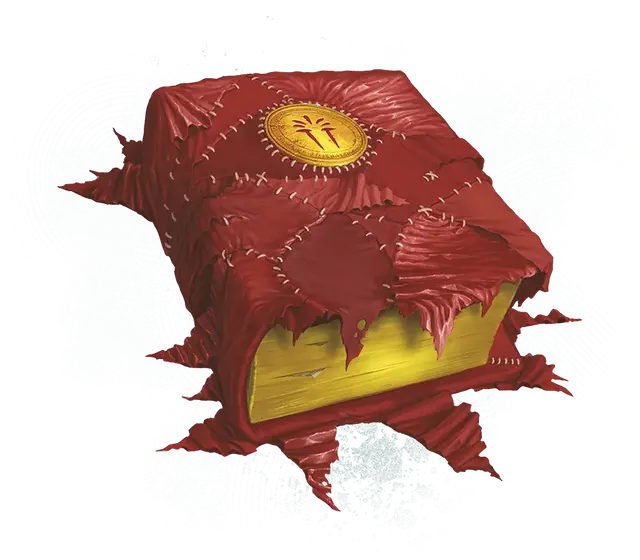

Алая книга заклинаний
Scarlet Spellbook
Чудесный предмет, редкий (требуется настройка Волшебником)

Рекомендованная стоимость 4 000 ЗМ
Неровные лоскуты красной ткани покрывают этот потрёпанный фолиант. Пока вы настроены на этот предмет, вы можете использовать его как Книгу заклинаний и Магическую фокусировку.
Магическая выносливость. Когда вы используете ваше умение Магическое восстановление, вы также восстанавливаете Хиты в количестве, равном 2к6 плюс половина вашего уровня Волшебника (округляя вниз).
Улучшенное запоминание заклинаний. Когда вы используете ваше умение Запомнить заклинание, вы можете заменить одно подготовленное умением «Сотворение заклинаний» заклинание 1-го уровня или выше на другое заклинание 1-го уровня или выше из вашей книги заклинаний